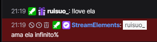

NÓS
MUITO NÓS
E UM POUCO DE DOIDERA

Oikkkk tudo bom?
É isso foi mais longe do que eu imaginei, mas espero que continue indo até onde ninguém possa sequer imaginar.
Já faz um tempo que tô escrevendo sobre vocêkkkkk mesmo que não fale nada, sempre gosto de registrar o que sinto e penso quanto tô com você.
Posso dizer com tranquilidade que esse foi o melhor mês da minha vida, isso pq tive você ao meu lado. Apesar dos pequenos conflitos, sempre continuarei te amando mais e mais.
Você me fez lembrar o que é viver, o que é sorrir, o que é amar. Vou eternamente ser grato por isso.
Quero que sabia, mesmo que tudo esteja desmoronando, continuarei me apaixonando por ti da mesma forma que os sóis se apaixonam pelos céus.
Se eu tentar escrever todas as coisas que amo em ti, essa mensagem ia ser maior que uma biblia kkkkkkkkkkkkkkkkkkk.
Quero (o mai rápido possível) poder te abraçar e agradecer pessoalmente por me salvar, sem você não sei o que seria de mim, sem você nem consigo sabe se estaria aqui.
Muito obrigado Wabi Portilho, por aceitar esse maluco ao seu lado.
Obrigado por me fazer sorrir todos os dias. Obrigado por sempre me ouvir.
Te amo
E sempre amarei enquanto existirmos.